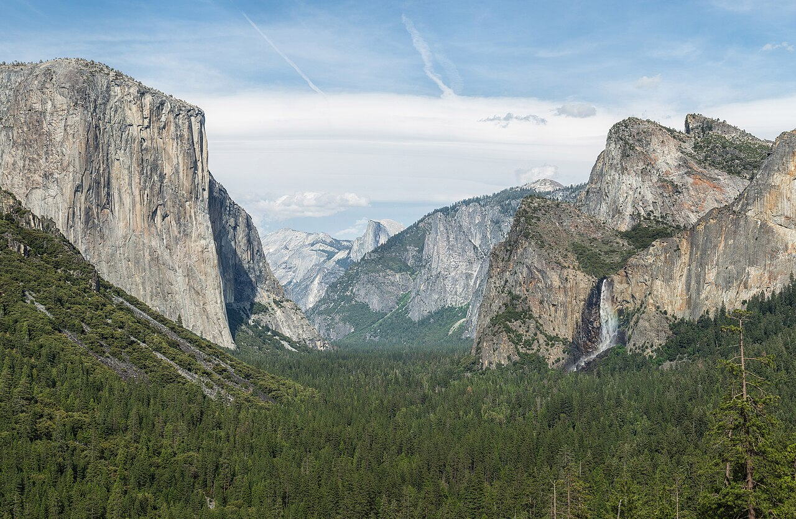

Yosemite Valley from San Francisco · 5-day family itinerary
Four November nights in Yosemite Valley, reached on the road the park says needs chains least often, with chains in the car anyway. Short paved walks for a ten-year-old and a seven-year-old, the free Valley shuttle, and a Mariposa Grove day that goes ahead only if the morning road report allows.

Photo: Diliff, Tunnel View, Yosemite Valley, Yosemite NP, CC BY-SA 3.0, via Wikimedia Commons.

Checked before you commit
This illustrative route drives from San Francisco to Yosemite Valley on Highway 140, stays four nights in the Valley and uses the free Valley shuttle for most walks. The National Park Service’s Yosemite pages on conditions, chains, driving, fees, transport, lodging, bears, trails and the Mariposa Grove, and the YARTS Highway 140 timetable, were checked on 26 October 2026. Nothing was booked.
Day 1 drives in on the El Portal Road. Days 2 and 3 stay on the Valley floor by shuttle: Cook’s Meadow, Mirror Lake, the Vernal Fall footbridge. Day 4 is the Mariposa Grove on the Wawona Road, only if the road report allows. Day 5 is Bridalveil Fall and the drive out.
Walks of 30 minutes to 1.5 hours for a ten-year-old and a seven-year-old, mostly paved, from one base, so nobody repacks. Each day has a morning and an afternoon slot. The one long drive inside the park, about an hour each way to the grove, has a Valley version beside it.
Rooms, shuttle running days and road status were not checked for your dates. US$ figures are the park’s and YARTS’s published prices on 26 October 2026 and are not converted. A booking-hub link is intent only. It doesn’t hold a room, a seat or a pass.
Planning boundary: dates are illustrative; the worked example runs Monday 9 to Friday 13 November 2026. The park says to expect chain requirements from November through March, even if you only visit the Valley and use the free shuttle, and that rental cars are not exempt.
Rental companies generally don’t provide chains, and chains are hard to rent, so plan to buy a set that fits your tyres before you reach the park. Alfred doesn’t check road status, chain controls or shuttle running days. Book opens a partner checkout; it doesn’t prove a booking.
Route and family-coordination brief
Party: two adults, one ten-year-old and one seven-year-old, Australian residents. Base: four nights in Yosemite Valley. Pace: moderate, a morning and an afternoon slot. Budget input: Mid Range. Published fees appear only where an official page states them; nothing is totalled as a family quote.
Getting there: a car from San Francisco. The park puts the drive at 4 to 5 hours. Inside the Valley, the free Valleywide shuttle runs every 12 to 22 minutes and the East Valley shuttle every 8 to 12 minutes, both 7 am to 10 pm, says the park. There is no timed-entry reservation for 2026.
Chains: carry them from the start. Inside a posted chain control, every vehicle must have chains on board, including four-wheel drives and rentals. The R-1, R-2 and R-3 signs decide whether they go on. Plastic straps don’t qualify; cables and tyre socks do. Fines reach US$5,000, and the park says the rule is strictly enforced.
Entry: the park lists US$35 per private vehicle, valid seven days, plus US$100 per non-US resident aged 16 and over, card only. Two Australian adults in one car pay US$235. The US$250 nonresident America the Beautiful pass covers the car and its passengers, nonresident fees included, for a year. From 2026, fee-free days apply to US residents only.
Day 1 — Drive in on the El Portal Road, fuel at El Portal, a short walk at dusk
Leave San Francisco after breakfast. The park puts the drive at 195 miles (314 km) and 4 to 5 hours via Highway 120 or 140. We take Highway 140 through Mariposa and El Portal, because the park says chains are needed less often on the El Portal Road than on the Wawona Road (Highway 41) or the Big Oak Flat Road (Highway 120 from the west).
Fill the tank at El Portal. The park lists 24-hour fuel by card at El Portal, Crane Flat and Wawona, and none in Yosemite Valley. At the Arch Rock Entrance, pay by card: the park does not accept cash. For two Australian adults, the published fees are US$35 for the car, valid seven days, plus US$100 each as non-US residents aged 16 and over. Children under 16 don’t pay the nonresident fee.
Check in to a Valley base. The park lists Yosemite Valley Lodge, near the base of Yosemite Falls, and The Ahwahnee as open year-round; we didn’t check rooms or rates. Before dark, carry every bag with food, drinks, toiletries or baby wipes into the room. The park says food may stay in a car only in daylight, out of sight, and never after dark, even in the boot.
If there is light left, walk the Lower Yosemite Fall loop: 1 mile (1.6 km), about 30 minutes, paved and almost flat. The park says the fall is often dry from late July or August through October, and on 23 October 2026 it listed Yosemite Falls as dry. Treat it as a valley-floor walk, not a waterfall promise.
Fallback: if a chain control is posted on Highway 140 and you would rather not fit chains, the park suggests parking at a YARTS stop on Highway 140 outside the park, such as Mariposa or El Portal, and riding YARTS in. YARTS publishes US$12 one way from Mariposa to Yosemite Valley for an adult.
Live-check: the park’s road line, 209/372-0200 (then 1, 1), and the Caltrans line, 800/427-7623, before you leave; your room booking; fuel before Arch Rock.
Day 2 — Junior Ranger booklets, Cook’s Meadow, the paved mile to Mirror Lake
Take the free Valleywide shuttle to stop #5 for the Yosemite Exploration Center, the former Valley Visitor Center, which the park lists as open year-round, 9 am to 5 pm. Pick up the Junior Ranger handbook, which the park says is free at visitor centres. Children show the finished booklet to a ranger at a visitor centre during opening hours to receive the badge.
From the centre, walk the Cook’s Meadow Loop: 1 mile (1.6 km), flat, about 30 minutes, with views of Yosemite Falls, Half Dome and Sentinel Rock. Walk out onto Sentinel Bridge for the classic Half Dome view. The park says the boardwalks are slippery when wet or frosty. Stay on the path; the meadow is fragile.
Ride the shuttle to stop #17 and walk the paved first mile to Mirror Lake and back: 2 miles (3.2 km) and about an hour, says the park. The lake has little water much of the year. The full loop is 5 miles (8 km), and its south side can stay icy in winter, so we turn back at the end of the paved road.
Keep children well back from Tenaya Creek. The park warns that a crossing that looks ankle deep can quickly become thigh deep. There is no drinking water at the trailhead or along the trail; vault toilets are about 0.5 miles and 1 mile in.
Fallback: in rain or snow, swap the afternoon for the Exploration Center’s exhibits and an early dinner. The park lists average November temperatures in the Valley of 13°C by day and 0°C at night.
Live-check: shuttle times on the park’s public transport page; the Exploration Center’s hours.
Day 3 — Happy Isles to the Vernal Fall footbridge, a quiet afternoon
Take the shuttle to Happy Isles, stop #16, and walk to the Vernal Fall footbridge and back: 1.6 miles (2.6 km), about 400 feet (120 m) of climb and 1 to 1.5 hours, rated moderate by the park. The trail is almost entirely uphill on the way in. On 23 October 2026 the park listed Vernal Fall as low.
We turn around at the footbridge. Beyond it, the Mist Trail climbs a steep granite stairway of more than 600 steps, and the park listed a weekday repair detour on that stretch through October 2026. We found no November schedule on the park’s pages. The Happy Isles Art and Nature Center nearby is open April through October only, so it is closed on these dates.
In the afternoon, finish the Junior Ranger booklets and take them to the Exploration Center before 5 pm. Keep the food rule in mind at picnic spots: the park asks visitors to keep food within arm’s reach and to stay at least 50 yards from bears.
Fallback: if the trail is icy, walk the flat paved paths near Yosemite Valley Lodge instead and move this walk to Day 5 morning, or ask Hey Alfred to swap Day 3 and Day 4.
Live-check: the park’s current conditions page for trail notes and ice; sunset time for your date.
Day 4 — Mariposa Grove of Giant Sequoias, if the road report allows
Call the road line at breakfast. The Mariposa Grove day uses the Wawona Road (Highway 41), which the park says needs chains more often than the El Portal Road. If chains are required and the driver isn’t confident fitting them, use the fallback and keep the Valley day.
If the road is clear, drive a little over an hour to the Mariposa Grove Welcome Plaza near the South Entrance. Its car park has about 300 spaces and may fill by late morning, so go early. The park lists the free grove shuttle for 1 to 30 November 2026 as running, weather permitting, from 8 am to 3:30 pm, with buses about every 15 minutes.
Private cars can’t drive the grove road without a disability placard. The park says the grove has more than 500 mature giant sequoias, no food services and, outside summer, drinking water only at the Welcome Plaza. Pack lunch and water; daytime food can stay in the car out of sight with windows closed. Restrooms include the arrival area and a vault toilet near the Grizzly Giant.
Take the shuttle back well before the last bus, then drive back to the Valley before dark. Wawona has 24-hour fuel by card; the Wawona Hotel was listed as closed when we checked.
Fallback: without the shuttle, the park says the grove is a 2-mile (3.2 km) walk each way with about 500 feet of climb, which we don’t plan for a seven-year-old. Stay in the Valley instead: Bridalveil Fall and a slow shuttle loop.
Live-check: the road line and chain status for Highway 41; the park’s Mariposa Grove page for shuttle dates and hours; whether the Glacier Point Road is still open, if you are tempted by it.
Day 5 — Bridalveil Fall on the way out, back to San Francisco
Pack the car after breakfast, then drive about 10 minutes to the Bridalveil Fall car park, which has restrooms. The paved walk to the base is 0.5 miles (0.8 km) return, about 20 minutes and 80 feet of climb, says the park, and the fall flows year-round, low in autumn. No shuttle serves it. Rocks above the viewing platform are slippery even when dry.
Leave the Valley on the El Portal Road and refuel at El Portal for the drive to San Francisco. Allow for road works: the park listed 15-minute weekday delays at El Capitan Bridge, 7 am to 7 pm, through December 2026.
Fallback: if chains are required on the way out, fit them at the chain-control turnout the signs point to, as the park asks, and keep to the 25 mph limit inside the control area.
Live-check: the road line and Caltrans line before you start; El Capitan Bridge delays on the park’s conditions page.
Planning notes
Dates are illustrative. At decision time, recheck the park’s road line and conditions page, the chain rules, the shuttle and Mariposa Grove pages for November running days, the fee page, and your room. A travelling profile is required, and the adults, children and ages Alfred plans for come from the travellers on that profile.
On web Lets Go, Holiday takes origin, destination, dates, a budget step and a day pace, then Plan my trip queues the itinerary. Moderate day pace fills a morning and an afternoon slot, with lunch and dinner. The Estimated costs bar, when it appears, is a rounded median of flight-and-hotel packages, not a quote.
While the trip is still Planning, you can keep or change the hotel and then the flights Alfred picked. Holiday takes one destination. We did not test whether city search offers Yosemite Valley, El Portal or Mariposa.
Once the trip is ACTIVE, you can edit an item’s title, times and notes, so “Mariposa Grove only if Highway 41 is chain-free; call 209/372-0200 at breakfast; Valley day if not” can sit on the card. In Hey Alfred you can ask to swap two full days, and you confirm before it is applied. Book opens a partner checkout. It doesn’t check road status or chain controls.
Plan a trip
Start with your people, dates and pace, then review the editable plan before booking.
Plan a trip